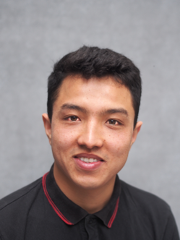

Lebenslauf

Persönliches
- Geb.25. Oktober 1995
- ledig
- Afghanistan
- Bewilligung, F(keine Einschränkung in Arbeitsmarkt )
Beruferfahrungen
- 05/2013 – 10/2013 Arbeit in einer Stickerei-Fabrik
in Ghazni, verantwortlich für Software und Maschinen
- 12/11/2018 – 16/11/2018 Schnupper woche
bei der Taywa (GmbH) als Applikationentwickler
Ausbildung & Schule
- 26/11/2018 – Powercoders in Basel
- 17/09/2018 – 21/11/2018 Schnuppersemester an der Uni Zürich Fachrichtung Informatik
- 06/2016 – 07/2016 Englischkurses an der Berufschule Rüti (ZH)
- 02/2015 – 03/2015 Beginn das Studiom an der Ghazni Universität Fachrichtung Computer science
- Winter 2014 Gymnasialer Abschluss Punktzahl: 98/100
- 2008 – 2014 Gymnasium in Jaghori, Provinz Ghazni
- 2002 – 2008 Grundschule
- in Jaghori, Provinz Ghazni
Sprachen
- Deutsch fliessend in Wort und Schrift (B2-C1)
- Persisch (Dari)Muttersprache
- Englisch fliessend in Wort und Schrift (B2-C1)
- Paschtu fliessend in Wort und Schrift (B1)
- Urdu fliessend in Wort (B1)
IT-kenntnisse
- Office ( MS Word, MS Outlook, MS Powerpoint )
- Adobe Photoshop
- HTML
- CSS
Interessen
- Technologie
- Lesen
- Freiwilligenarbeit
- Sport
- Kochen
Referenzen
- Claudia Egli, Kauffrau Reisebüro, Tel: 055 240 39 32
- pfrn. Renate Bosshard-Nepustil,Kirchgemeinde Zürich Witikon, Tel: 044 380 48 96
- Marie Hoes, phD Studentin, ETH Zürich, Tel: 044 633 86 99